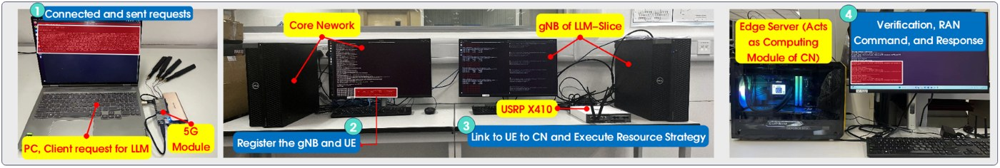

I am the Principal Scientist of Embodied AI (Chief Researcher) and Director of the Hainan Lab at 4Paradigm (第四范式). I am also affiliated with University College London (UCL).
I received my PhD in Electronic and Computer Engineering from The Hong Kong University of Science and Technology (HKUST), supervised by IEEE Fellow Prof. Jun Zhang (张军). During the first two years of my doctoral studies, I worked with Prof. Ming Liu at the Robotics Institute.
Previously, I received my bachelor’s degree from Hainan University, where I was supervised by Prof. Jieren Cheng and received the university’s “Student of the Year” award, its highest student honor (10 recipients annually). I then earned my research master’s degree at the University of Chinese Academy of Sciences, conducting research at SIAT under Prof. Lujia Wang. My earlier robotics work included Macau’s first self-driving bus (2020–2021), led by IEEE Fellow Prof. Cheng-Zhong Xu, and testing and demonstrations for HKUST’s licensed autonomous vehicle (2021–2022).
In 2025, I was a visiting PhD researcher at University College London, working with Prof. Dimitrios Kanoulas and Prof. Jagmohan Chauhan. During the visit in the UK, I also maintained an ongoing collaboration with Prof. Qiang Yang at the University of Cambridge.
My research focuses on Embodied / Physical AI and Robot Operating Systems. I currently co-lead PhancyMotus of 4Paradigm, an open-source Agentic Robotics project that aims to develop a general-purpose agentic robot operating system, connecting perception, reasoning, planning, and action so robots can learn and operate across diverse tasks and environments. I am also currently establishing the Hainan Lab at 4Paradigm.
I have been building full-stack robotic systems since 2014—now in my 13th year. I welcome research collaborations, technical exchanges, open-source contributions, and startup opportunities. If you share an interest in embodied intelligence or building robots that work in the real world, feel free to contact me!
🔥 News
- 2026.09: 🎉🎉 I successfully defended my PhD thesis and received my doctoral degree from HKUST!
- 2026.09: 🎉🎉 OpenNavMap has been accepted by IEEE Transactions on Robotics!
- 2026.06: 🎉🎉 MobileROS has been accepted by IEEE Transactions on Robotics!
- 2024.10: 🎉🎉 The Areas of Excellence Scheme (HKD 87.304 million) has successfully passed the middle review. I was responsible for the Demo and developed a 6G intelligent network slicing system and a 6G LLM-enabled smart glasses in the past year! [Video]
- 2024.10: 🎉🎉 Our poster on “LLM-enabled Private Network” has been accepted by SenSys 2024!
- 2023.07: 🎉🎉 I am honored to join the research group under the supervision of IEEE Fellow Prof. Jun Zhang as a PhD candidate. My main research directions are 5G/6G in Robotics, Edge Robotics.
- 2023.06: 🎉🎉 One paper is accepted by IEEE Trans. on Auto. Sci. and Eng.
📝 Selected Publications Github YouTube Bilibili
IEEE T-RO MobileROS: A Wireless-Native Robot Operating System for Mobile Networked Robotics
IEEE ICRA Peer-assisted robotic learning: a data-driven collaborative learning approach for cloud robotic systems.
IEEE R-AL/ICRA Federated imitation learning: A novel framework for cloud robotic systems with heterogeneous sensor data.
IEEE R-AL/IROS Lifelong federated reinforcement learning: a learning architecture for navigation in cloud robotic systems.
IEEE T-ASE RoboEC2: A Novel Cloud Robotic System with Dynamic Network Offloading Assisted by Amazon EC2.
ACM SenSys The Starlink Robot: A Platform and Dataset for Mobile Satellite Communication
ACM SenSys Poster Abstract: LLM-Slice: Dedicated Wireless Network Slicing for Large Language Models
CCF-NCTCS (Outstanding Paper Award) Singular point probability improve LSTM network performance for long-term traffic flow prediction.
ICAIS (Outstanding Paper Award) Design and Test of the Intelligent Rubber Tapping Technology Evaluation Equipment Based on Cloud Model.
Granted invention patent
Cloud-platform shared learning system and method, shared platform and method, and medium.
基于云平台共享学习系统及方法、共享平台及方法、介质。
Inventors: Boyi Liu (first inventor), Lujia Wang, Ming Liu, Cheng-Zhong Xu.
🤖 Robotics & Embodied AI Projects
Recent robot learning & systems projects
PhancyMotus
Co-lead · Open-source Agentic Robotics
Developing a general-purpose agentic robot operating system that connects perception, reasoning, planning, and action, enabling robots to learn and operate across diverse tasks and environments.
VLA Agent for Continual Learning
VLA Agent module lead · 2026
Agent-guided training orchestration for OpenPI / VLA policies, combining task replay, memory and adaptive step allocation. Evaluated through staged training on RLBench and G2 DAgger data.
Combines skill orchestration, memory, dynamic step allocation, task replay and sample-level arbitration to balance new-task acquisition with retention of earlier tasks.
LooperMuscle: Humanoid Whole-Body Tracking
First author · 2025
A structured mixture-of-experts actor–critic framework for 29-DoF humanoid tracking. Reaches 90% of PPO’s tracking quality in approximately 45 minutes, with real-robot deployment at 50 Hz.
Uses joint-group MoE gating, an expert-aware distributional critic and contribution-routed replay; reports 34% lower error than FastSAC.
MobileROS: Wireless-Native Robot Operating System
First author · 2025
A Hub–Engines–Cells architecture connecting wireless networking with robot perception and autonomy. Evaluated through 1.5 years of deployments across three cities.
Starlink Robot: Platform & Dataset
First author · 2025
A real-robot platform and dataset for mobile satellite connectivity, integrating onboard sensing with a satellite–edge–device architecture.
6G Corner @ HKUST
Independent development · Wireless systems testbed

An OpenAirInterface-based wireless testbed with application-oriented network slicing for controlled experiments on robotics and AI workloads.
NextG LLM Smart Glasses
First-author project
An LLM-powered wearable prototype on the 6G Corner testbed, studying how network latency and throughput shape interactive AI responses.
Humanoid Motion Decomposition & Parallel Reinforcement Learning
First author · 2025
Reproducing and extending FastSAC / Ψ₀-based pipelines that split long-horizon motion into primitives, train them in parallel, and compose them into coordinated whole-body behaviors.
Ongoing reproduction and deployment. Illustration from Ψ₀.
Featured Project Contributions
Macau’s First Autonomous Bus
Research contributor · University of Macau
Contributed to sensing, planning, control, and platform testing under Prof. Cheng-Zhong Xu at the State Key Laboratory of Internet of Things for Smart City.
Participated in the initial testing with Beizhang Chen across Hefei, Zhuhai, and Macau, followed by campus testing at UM.
Project details & collaborators
Year: 2020
Project Investigator: Cheng-Zhong Xu, SKL-IOTSC of UM
Collaborators: Students and faculty members from SIAT-CAS, Baidu, Hailiang, etc.
Beizhang Chen and I participated in the original testing work for the autonomous bus in Hefei→Zhuhai→Macau together.
Contributed to the University of Macau’s autonomous bus research: sensor fusion for obstacles, pedestrians and traffic signals, planning and control, lane changes, emergency braking, and precise bus-stop docking. The platform was tested on the university campus.
Hong Kong’s First Unmanned Vehicle
Research contributor · HKUST
Contributed to Prof. Ming Liu’s autonomous vehicle research, including sensor integration, dynamic modeling, route planning, and real-time obstacle avoidance.
The system used LiDAR for high-frequency obstacle perception and 3D pose estimation and was demonstrated at HKUST Robotics Day.
Earlier Robotics Projects
Federated Imitation Learning (FIL)
First author
Proposed a cloud-side knowledge aggregation algorithm that fuses policies from distributed robots, together with a knowledge transfer mechanism that lets local robots learn from shared experience.
Accounts for privacy and heterogeneous sensor data to improve imitation accuracy and training efficiency.
Lifelong Federated Reinforcement Learning (LFRL)
First author · Jun 2018 — Jun 2019
A navigation learning architecture and web platform for cloud robotics, enabling robots to accumulate, share, and transfer experience across tasks and adapt to new environments.
RoboEC2: Cloud Robotics with Dynamic Network Offloading
First author
A cloud robotic system that combines ROS with Amazon EC2 and dynamically offloads computation over the network. The supplied architecture diagram shows the launch configuration, robot–cloud communication, and cloud services.
Agricultural Pest Monitoring Robot
Project lead · 2015–2016
Built an autonomous robot for pest recognition and trapping, environmental monitoring, localization and mapping, autonomous navigation, human–robot interaction, and network storage.
Award:
- Grand Prizes, National College Students’ Agricultural Engineering Innovation/Entrepreneurship Competition, evaluations from 3 CAS/CAE Members etc.
Team & demos
Author: Boyi Liu, Kuanqi Cai@TUM, Pengchao Shi@Alibaba, Shunwei Huang@JD.com, etc.
Video: YouTube Bilibili · Additional demo
Autonomous Navigation Pesticide Spraying Robot
Project lead · 2016–2017
Developed a pest-control robot combining BeiDou navigation and thermal imaging for pest detection, autonomous patrol, environmental monitoring, precision spraying, and air–ground collaboration.
Award:
- Grand Prizes, “Challenge Cup” National College Students’ Extracurricular Academic Works Competition in Hainan Province.
Team & demos
Author: Boyi Liu, Yilong Sun@SCUT, Bingjie Yan@CAS-ICT, Yifan Yang@USC, etc.
Video: YouTube Bilibili · Additional demo
Mini Agricultural Robot Function Verifier
Year: 2014
Follow-up:: Obtained an order for a robot for research purposes from the School of Software and Microelectronics, Peking University, and completed delivery.
Author: Boyi Liu, Yijie Li@Military unit, Zhuang Li@Peking University, Zengtao Jiang in USA, etc.
🎓 Education & Research Experience
Education
- Sep 2021 — 2026The Hong Kong University of Science and Technology
PhD, Electronic and Computer Engineering
Supervisors: Prof. Jun Zhang and Prof. Ming Liu. - Sep 2017 — Jun 2020University of Chinese Academy of Sciences
Research master’s degree, Shenzhen Institutes of Advanced Technology, CAS
Recommended admission. Supervisors: Prof. Lujia Wang and Prof. Cheng-Zhong Xu. - Sep 2013 — Jun 2017Hainan University
BEng, Network Engineering · Ranked 2/120 · Student of the Year (Highest Student Honor; 10 recipients annually)
Supervisors: Prof. Jieren Cheng and Prof. Zhuhua Hu.
Visiting Research / Internships
- Jan — Jul 2025University College London
Visiting PhD / Research Intern
With Prof. Dimitrios Kanoulas and Prof. Jagmohan Chauhan: network-aware robotic architectures, connectivity-aware deployment and mobile satellite communication for robotics. - 2020 — 2021University of Macau
Research Intern · State Key Laboratory of Internet of Things for Smart City
With Prof. Cheng-Zhong Xu: research and development of Macau’s first autonomous bus, including sensing, planning, control, and platform testing.
Research skills
- Embodied / Physical AI: robot learning, perception, reasoning, planning, and control.
- Robot operating systems: agentic architectures, ROS, and full-stack integration and deployment on real robots.
🎖 Honors and Awards
Competition Awards:
- Student of the Year, Hainan University — Highest Student Honor; only 10 recipients annually.
- International Grand Prize, International “Silk Road” Robot Creative Design Competition, UASR and IKCEST of UNESCO.
- International Meritorious Winner, Mathematical Contest in Modeling (MCM), USA.
- National Grand Prize, Programming Design Ladder Competition, Coach.
- National Grand Prize, National University Student Network Business Innovation Application Competition, China Internet Association.
- National Silver Award, “Creating Youth” National University Student Entrepreneurship Competition, The Ministry of Education.
- National Bronze Award, “Challenge Cup” National University Student Extracurricular Academic Works Competition, The Ministry of Education.
- National Inspirational Scholarship for three consecutive undergraduate years, including 2014.
- Provincial Second Prize, ICAN National University Student Innovation and Entrepreneurship Competition (South China Region).
- Provincial Grand Prize, “Challenge Cup” Hainan Province University Student Entrepreneurship Competition, The Ministry of Education.
- Provincial Gold Award, “Internet+” Hainan Province Innovation and Entrepreneurship Competition, The Ministry of Education. Awarded twice.
- Provincial First Prize, “Challenge Cup” Hainan Province University Student Extracurricular Academic Works Competition.
- Provincial First Prize, National University Student Mathematical Modeling Competition Hainan Province Division.
- Provincial First Prize, China College Computer Competition - Artificial Intelligence Creative Competition.
- Provincial Second Prize, National University Student E-commerce Competition.
- Provincial Second Prize, National University Student Electronic Design Competition
- Provincial Silver Award, “Challenge Cup” Hainan Province Extracurricular Academic Works Competition.
- Provincial Third Prize, Hainan Free Trade Port Entrepreneurship Competition.
- Most Innovative and Practical University Student Award.
- National Second Prize, National Undergraduate Mathematical Modeling Contest.
- First Prize (Top 2), Microsoft Imagine Cup, South China Region.
- Outstanding Undergraduate Thesis; Outstanding Graduate; Merit Student, Hainan University.
Academic, Teaching and Talent Awards:
- 2025 · First Prize (rank 5), Hainan University Teaching Achievement Award.
- First Prize (rank 3), Hainan Province AI Science & Technology Achievement Award — Federated Learning and Mobile-Communication Robot Systems.
- Second Prize (rank 3), Hainan Province AI Science & Technology Achievement Award.
- Excellent Paper Award (first author), National Theoretical Computer Science Academic Annual Conference
- Outstanding Paper Award (third-author), International Conference on Cloud Computing and Security
- 2021 · First Prize (rank 3), Hainan University Teaching Achievement Award.
- 2021 · Second Prize (rank 3), Hainan Province Teaching Achievement Award (Higher Education).
- High-level Talent (Category D), Hainan Free Trade Port.
Teaching awards build on my long-term mentoring of the Robotics & AI Association founded during my undergraduate studies. Academic achievement awards were submitted through my entrepreneurial unit.
🌱 Mentored Students
I have had the pleasure of mentoring the following students in robotics and AI.
- Yifan Yang — PhD, Texas A&M University [Google Scholar]
- Shenhui Zhang — PhD, Shanghai Jiao Tong University
- Wei Li — PhD, Peking University
- Zilin Huang — MPhil, The Hong Kong University of Science and Technology (Guangzhou)
- Jiale Li — PhD, The Hong Kong University of Science and Technology (Guangzhou)
- Zhicheng Zhou — MPhil, University of Science and Technology of China
- Junxi Jin — PhD, Tongji University
🧑🎨 Services
- Volunteer, Teaching volunteer work in resource-constrained mountain schools. Founded the IEEE HNU Student Branch and the Robotics Association, serving as founding president for both. In these roles, promoted awareness and education in robotics and AI, making a difference for students from educationally disadvantaged regions. Honored with the Educational Achievement Award from the government for these efforts.
- Founder, IEEE Hainan University Student Branch
- Founder, Robotics and Artificial Intelligence Association of Hainan University
- Volunteer, Volunteer teaching and fundraising for children in poor areas
- Volunteer, International conferences as ICAIS etc.
- Reviewer, IEEE T-RO, ICRA, IROS, T-MI, RA-L, T-SMC: Systems, etc.
- Mentor, continued advising students in Hainan University’s Robotics & Artificial Intelligence Association after graduation.
💻 Entrepreneurship
I attempted to commercialize my research and established two companies:
- Hainan Data-Vigor Technology Co., LTD (海南数奕科技有限公司) — Legal representative, 2022–2026. A science and technology SME and high-tech seed enterprise.
- Hainan HaiRui-ZhongChuang Technology Co., LTD (海南海锐众创科技有限公司) — Co-founder; technical lead, 2019–2026. A National High-tech Enterprise.
These experiences continue to shape my approach to robotics research, student mentoring, and technology commercialization.